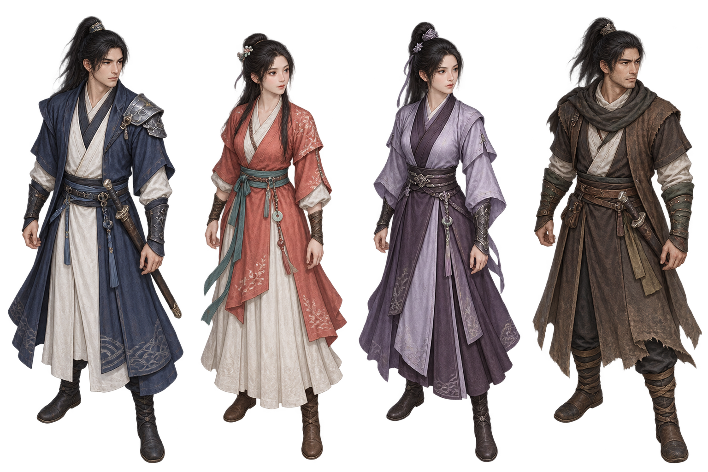

剑侠情缘外传
月影传说
江湖重逢
第一回
◇
少年意气
♫
音律
⚙
设置
⛶
全屏

一
杨影枫
初入江湖 · 壹级
气血
300 / 300
内力
180 / 180
体力
云起处，少年仗剑来
武当山
第一回 · 少年意气
E
交谈
鼠标点击
行走 / 交互
W A S D
移动
空格
轻功
E
交谈
操作说明
?
↑
←
↓
→
交谈
轻功
继续
↵
×
☾
月影传说
一卷江湖，正待展开